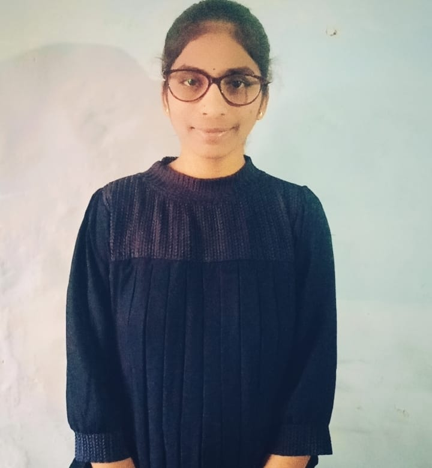

Hemalatha
Nandyal
email:hemaltahasadula03@gmail.com
phno:9959409404
Career Objective
To secure a challenging position in a reputable organization to expand my learnings, knowledge, and skills
EDUCATION DETAILS
B.Tech
(2021-2025)
svr engineering college
yop:2025
Percentage:89%
Intermediate
(2019-2021)
sri sai siddhartha junior college
yop:2021
Percentage:95%
SSC
(2018-1019)
S.V.Chaithanya E.M School
yop:2019
Percentage:95%
SKILLS
- programming
- communication
- Problem-solving.
- Business operations.
- Research and critical thinking.
- Leadership.
projects
- A website. Creating a website would be a great project if you're interested in web development. ...
- A mobile application. ...
- A data analysis model or data forecasting model. ..
- A chatbot. ...
- An API. ...
Achievements
- Received recognition for outstanding performance in machine learning,Android development,web development projects.
- Contributed significantly to project teams demonstrating leadership, communication, and technical skills.
- Completed relevant online courses or certifications to enhance knowledge and skills in machine learning, Android development, or web development.
Internships
- Completed a challenging internship at AICTE, gaining hands-on experience in AWS cloudcomputing
- "Interned at codsoft where I applied theoretical knowledge from my BTech program to solve practical engineering problems"
Declaration
"I certify that the information provided in this resume is true and accurate to the best of my knowledge."